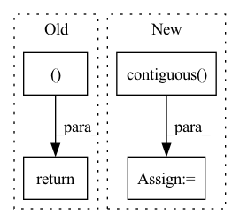

Pattern ID :714
Before Change
y = y.long()
loss = self.Loss(preds_, torch.squeeze(y))
return preds, loss
return preds
After Change
for i,k in enumerate(xs):
hs, cs = self.rim_model(row_index, ind, k, hs, cs)
preds = self.Linear(hs.contiguous() .view(x.size(0), -1))
preds_.append(preds)
if y is not None:
loss+= self.Loss(preds, y[:,i].squeeze().long())
preds_ = torch.stack(preds_, dim = 1)
if y is not None:
loss/=len(xs)In pattern: SUPERPATTERN
Frequency: 3
Non-data size: 4
Instances Fragment ID: 2399974
Project Name: dido1998/recurrent-independent-mechanisms
Commit Name: d87a800096eaa36730cbabac535eea24973f3799
Time: 2020-02-11
Author: adidolkar123@gmail.com
File Name: networks.py
M Class Name: CopyingModel
N Class Name: CopyingModel
M Method Name: forward(5)
N Method Name: forward(5)
M Parent Class: nn.Module
N Parent Class: nn.Module
M File Name: networks.py
N File Name: networks.py
M Start Line: 255
M End Line: 276
N Start Line: 291
N End Line: 313
Before Change
// returing:
// GPT2Model/Block[2]/MLP[mlp]/Dropout[dropout]
// GPT2Model/Block[2]/aten::add5567
return (self.l_29(self.l_28(torch.mul(input=torch.mul(input=t_33, other=0.5), other=torch.add(input=Tensor.tanh(torch.mul(input=torch.add(input=t_33, other=torch.mul(input=Tensor.pow(t_33, exponent=3), other=0.044715)), other=0.7978845608028654)), other=1)))), t_32 )
def state_dict(self,device=None):
// we return the state dict of this part as it should be in the original modelAfter Change
t_41 = self.b_3[0:9223372036854775807:1][:, 0:9223372036854775807:1][:, :, torch.sub(input=t_40, other=Tensor.size(t_39, dim=-2)):t_40:1][:, :, :, 0:t_40:1]
// calling Tensor.contiguous with arguments:
// GPT2LMHeadModel/GPT2Model[transformer]/Block[3]/Attention[attn]/aten::permute5905
t_42 = Tensor.contiguous( Tensor.permute(Tensor.matmul(self.l_32(Tensor.softmax(torch.sub(input=torch.mul(input=t_39, other=t_41), other=torch.mul(input=torch.rsub(t_41, other=1, alpha=1), other=10000.0)), dim=-1, dtype=None)), other=Tensor.permute(Tensor.view(t_38, size=[Tensor.size(t_38, dim=0), Tensor.size(t_38, dim=1), 12, torch.div(input=Tensor.size(t_38, dim=-1), other=12)]), dims=[0, 2, 1, 3])), dims=[0, 2, 1, 3]))
// calling torch.add with arguments:
// GPT2LMHeadModel/GPT2Model[transformer]/Block[2]/aten::add5739
// GPT2LMHeadModel/GPT2Model[transformer]/Block[3]/Attention[attn]/Dropout[resid_dropout]
t_43 = torch.add(input=t_34, other=self.l_34(self.l_33(Tensor.view(t_42, size=[Tensor.size(t_42, dim=0), Tensor.size(t_42, dim=1), torch.mul(input=Tensor.size(t_42, dim=-2), other=Tensor.size(t_42, dim=-1))])))) Fragment ID: 2399975
Project Name: saareliad/ftpipe
Commit Name: 9ddf98456ca57cac3a4a982fc519c5a71642dc25
Time: 2020-03-10
Author: saareliad@campus.technion.ac.il
File Name: models/partitioned/gpt2.py
M Class Name: Partition0
N Class Name: Partition0
M Method Name: forward(2)
N Method Name: forward(2)
M Parent Class: nn.Module
N Parent Class: nn.Module
M File Name: models/partitioned/gpt2.py
N File Name: models/partitioned/gpt2.py
M Start Line: 460
M End Line: 467
N Start Line: 396
N End Line: 430
Before Change
alignments = torch.stack(alignments).transpose(0, 1)
outputs = torch.stack(outputs).transpose(0, 1).contiguous()
return outputs, alignments
def is_end_of_frames(output, eps=0.2): /ǖ.2
return (output.data <= eps).all()After Change
// Back to batch first
alignments = torch.stack(alignments).transpose(0, 1)
outputs = torch.stack(outputs).transpose(0, 1).contiguous()
stop_outputs = torch.stack(stop_outputs).transpose(0, 1).contiguous()
return outputs, alignments, stop_outputs
Fragment ID: 2399976
Project Name: coqui-ai/tts
Commit Name: 5750090fcd4a6718608c7357e3890f5b2a545ae0
Time: 2018-03-22
Author: egolge@mozilla.com
File Name: layers/tacotron.py
M Class Name: Decoder
N Class Name: Decoder
M Method Name: forward(3)
N Method Name: forward(3)
M Parent Class: nn.Module
N Parent Class: nn.Module
M File Name: layers/tacotron.py
N File Name: layers/tacotron.py
M Start Line: 255
M End Line: 347
N Start Line: 259
N End Line: 359